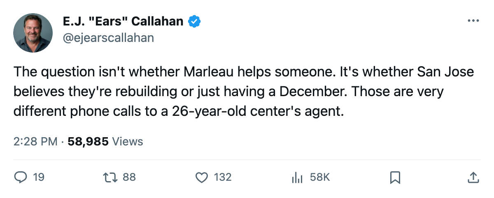
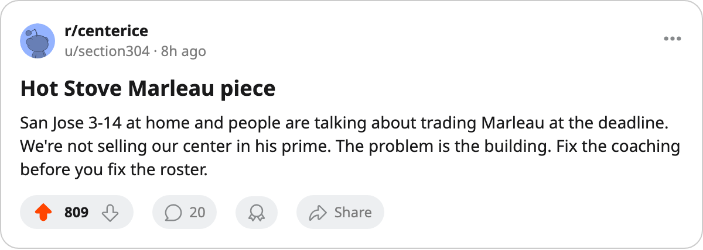

Rental Market: San Jose Has the League's Only Unmoved Franchise Center. He's 26, and He's on an Expiring Deal 🔥🔥
Patrick Marleau, $7.57M, 85 overall, 34 points in 35 games. San Jose is 3-14 at home, L7, and pays $2.14M per standings point. The deadline is 80 days out.
 E.J. "Ears" CallahanInsider · The Hot Stove
E.J. "Ears" CallahanInsider · The Hot Stove

Marleau's expiring deal and SJ's slide

 Patrick Marleau85 is 26 years old, on an expiring contract at $7.57M, sitting at 85 overall with 34 points in 35 games, and he plays for a team that has won 3 home games in 17 tries.
Patrick Marleau85 is 26 years old, on an expiring contract at $7.57M, sitting at 85 overall with 34 points in 35 games, and he plays for a team that has won 3 home games in 17 tries.  San Jose Sharks are 11-16-7, 31 standings points, and on a 7-game losing streak, the league's longest active slide. The trade deadline is 80 days away.
San Jose Sharks are 11-16-7, 31 standings points, and on a 7-game losing streak, the league's longest active slide. The trade deadline is 80 days away.
Go down the contract-year top 30 and sort by team points. Every other bottom-tier club with a franchise-caliber expiring name has been addressed.  Ottawa Senators holds two (Alfredsson at $11.40M, Hossa at $2.30M and an elbow, both at 89 morale).
Ottawa Senators holds two (Alfredsson at $11.40M, Hossa at $2.30M and an elbow, both at 89 morale).  Washington Capitals holds Gonchar at $3.30M and 25 points.
Washington Capitals holds Gonchar at $3.30M and 25 points.  Detroit Red Wings holds two goaltenders worth $9.20M combined. Marleau sits alone on San Jose Sharks and the market hasn't blinked.
Detroit Red Wings holds two goaltenders worth $9.20M combined. Marleau sits alone on San Jose Sharks and the market hasn't blinked.
Why the numbers say sell, and why the room says stay
The payroll math is ugly. San Jose carries $66.24M for 31 standings points, which is $2.14M per point, the league's 2nd-worst rate behind Washington at $2.19M. Marleau's individual rate is $0.22M per point ($7.57M across 34 points), which means he is singlehandedly keeping the arithmetic from looking even worse. Strip him out and San Jose Sharks is spending $58.67M to generate whatever 31 minus his contribution looks like. That's not a contender's math.
But he's 26. The players you rent at a deadline are 31, 33, 35.  Peter Forsberg95 is 32.
Peter Forsberg95 is 32.  Alexander Mogilny89 is 36.
Alexander Mogilny89 is 36.  Daniel Alfredsson91 is 33.
Daniel Alfredsson91 is 33.  Milan Hejduk88 is 29,
Milan Hejduk88 is 29,  Teemu Selanne86 is 35. Marleau is the youngest true top-nine center in the contract-year class by a year, and a team that trades a 26-year-old center at 85 overall isn't buying picks. It's rebuilding.
Teemu Selanne86 is 35. Marleau is the youngest true top-nine center in the contract-year class by a year, and a team that trades a 26-year-old center at 85 overall isn't buying picks. It's rebuilding.
League sources say San Jose Sharks holds 5 picks, 1 first-rounder, which is already league-average capital for a club with no confirmed moves this window. They don't need more. They'd need a top prospect, a package that says "we're rebuilding around someone else," and that's a conversation nobody is having yet.
The market read
The buyers with cap space and a hole up the middle are limited.  Colorado Avalanche has $66.38M, three forwards at $9.90M or above, and just absorbed long-term money from Nashville in the window's second confirmed deal.
Colorado Avalanche has $66.38M, three forwards at $9.90M or above, and just absorbed long-term money from Nashville in the window's second confirmed deal.  New Jersey Devils pays $1.14M per point and runs at $58.20M with 51 points. They could theoretically absorb Marleau's salary, but New Jersey just made the window's only confirmed buyer trade and probably doesn't want a second rent on top.
New Jersey Devils pays $1.14M per point and runs at $58.20M with 51 points. They could theoretically absorb Marleau's salary, but New Jersey just made the window's only confirmed buyer trade and probably doesn't want a second rent on top.
The real answer is the one nobody wants: San Jose keeps him, pays him more in July, and hopes the 3-14 at home was a stretch of bad goaltending and not a structural problem. The morale scale puts him at 89. He's unhappy enough to leave and comfortable enough to stay through March.
My call: Marleau plays 50 games for San Jose. The rental doesn't happen. The $2.14M per-point rate is a July problem, not a March problem.
CONFIRMED vs. DENIED: No league record of any San Jose trade discussion. This is the market read, not a source.

